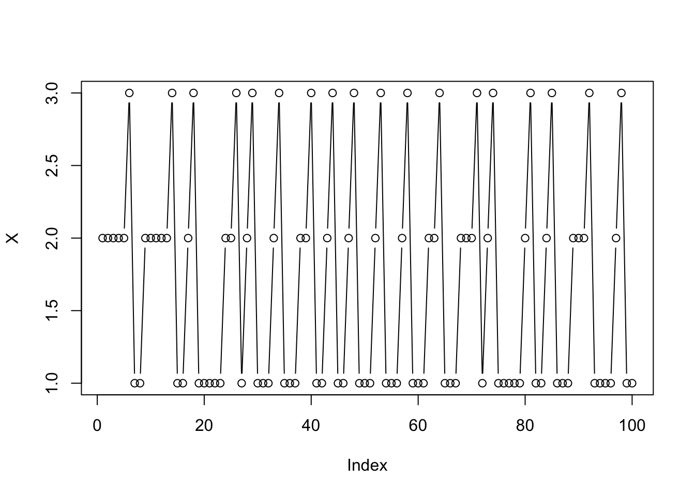
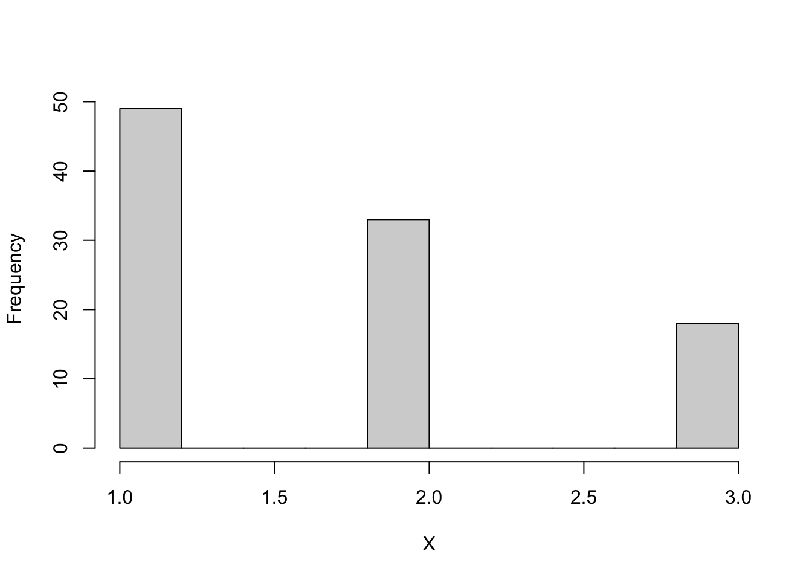
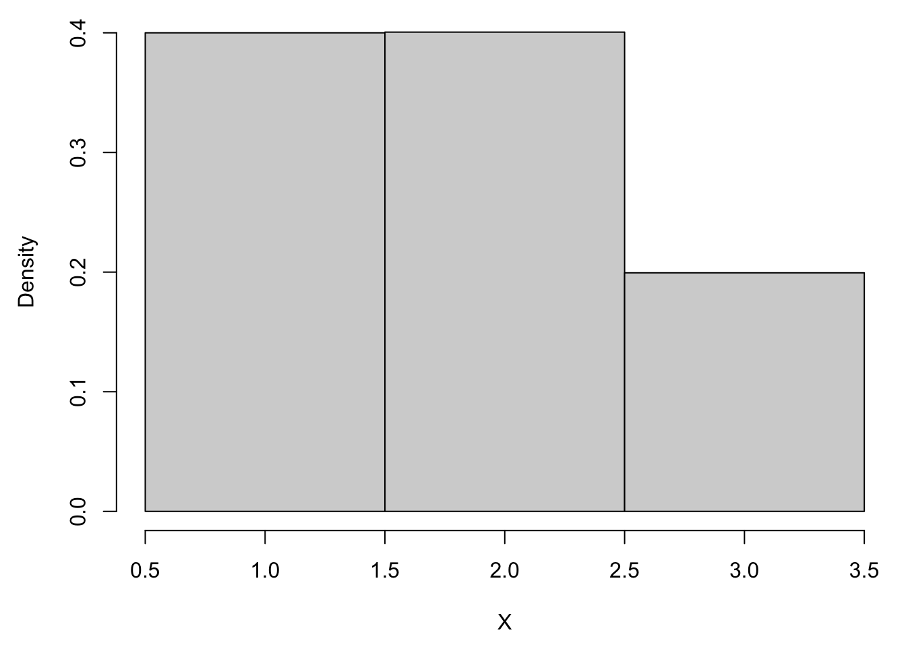

Chapter 3 Simulating Statistical Models
3.1 Markov Chains
Definition 3.1 A stochastic process \((X_t)_{t\in \mathcal N_0}\) with values \(X_t\in S\) is called a Markov Chain with state space \(S\) if
\[P(X_{t+1}\in A_{t+1}| X_t=a_t,...,X_0=a_0)=P(X_{t+1}\in A_{t+1}|X_t=a_t)\\ \forall a_0,...,a_t\in S, A_{t+1}\subseteq S, t\in \mathcal N_0\]
where \(\mathcal N_0=\mathcal N\cup \{0\}\)
i.e. knowing Just Before is enough.
Example 3.1 Random Walk
Let \((\epsilon_n)_{n\in \mathcal N}\) be a sequence of i.i.d. random variables, and let
\[X_n:=\sum_{i=1}^{n}\epsilon_i, \forall n\in \mathcal N\\ X_0:=0\]
Then \((X_n)_{n\in \mathcal N_0}\) is a Markov Chain (MC).
To see this, note that \(X_{n+1}=\sum_{i=1}^{n+1}\epsilon_i=\sum_{i=1}^{n}\epsilon_i+\epsilon_{n+1}=X_n+\epsilon_{n+1}\), \(X_n\) \(\perp\) \(\epsilon_{n+1}\)
So \(X_{n+1}\) only depends on \(X_n\)
Example 3.2 Let \((\epsilon_n)_{n\in \mathcal N}\) be i.i.d., and let
\[X_0=0, X_1=0,\\ X_n=\frac{X_{n-1}+X_{n-2}}{2}+\epsilon_n, \forall n\in \{2,3,...\}\]
\(X_{n+1}=\frac12 X_n+\frac12 X_{n-1}+\epsilon_{n+1}\)
\(X_{n+1}\) not only depends on \(X_n\) but also \(X_{n-1}\) so not a MC.
A MC is described by
the probability \(p_{xy}(t)=P(X_{t+1}=y|X_t=x)\)
the probability \(\pi_x=P(X_0=x)\) (This just controls the initial condition, also note that this notation is only valid in discrete cases)
If \(p_{xy}(t)=p_{xy}\) independent of t, then \((X_t)_{t\in \mathcal N}\) is called time homogeneous.
From now on, we will assume time homogeneous.
3.1.1 Discrete case
If S is discrete, then we can characterise transition probabilities by the probabilities \(p_{xy}=P(X_{t+1}=y|X_t=x),\forall t\in \mathcal N_0\)
If S is finite, we can write the \(p_{xy}\) as a matrix.
Example 3.3 Consider \(S=\{1,2,3\}\)
\(P=\begin{bmatrix}\frac12 & \frac12 & 0 \\ 0 & \frac12 & \frac12 \\ 1& 0 & 0 \end{bmatrix}\)
\(p_{xy}\) corresponds to row x, column y \(\implies P(X_{t+1}=2|X_t=1)=p_{12}=\frac12\)
Note that from this matrix, you can see when in state 3, you must go to state 1 in next step.
P <- matrix(c(1/2, 1/2, 0,
0, 1/2, 1/2,
1, 0, 0), 3, 3, byrow=TRUE)
# For initial condition
# remember there are 3 states
pi <- c(1/3, 1/3, 1/3)
# sampling 1 number from 1:3 with prob=pi
X0 <- sample(3, 1, prob=pi)
Xi <- X0
for (i in 1:10){
p.next <- P[Xi,]
Xi <- sample(3,1, prob=p.next)
cat("X[", i, "] = ", Xi, "\n", sep="")
}## X[1] = 3
## X[2] = 1
## X[3] = 2
## X[4] = 2
## X[5] = 2
## X[6] = 3
## X[7] = 1
## X[8] = 2
## X[9] = 2
## X[10] = 2P <- matrix(c(1/2, 1/2, 0,
0, 1/2, 1/2,
1, 0, 0), 3, 3, byrow=TRUE)
# For initial condition
# remember there are 3 states
pi <- c(1/3, 1/3, 1/3)
# sampling 1 number from 1:3 with prob=pi
X0 <- sample(3, 1, prob=pi)
n <- 100
X <- numeric(n)
Xi <- X0
for (i in 1:n){
p.next <- P[Xi,]
Xi <- sample(3,1, prob=p.next)
X[i] <- Xi
}
X## [1] 2 2 2 2 2 3 1 1 2 2 2 2 2 3 1 1 2 3 1 1 1 1 1 2 2 3 1 2 3 1 1 1 2 3 1 1 1
## [38] 2 2 3 1 1 2 3 1 1 2 3 1 1 1 2 3 1 1 1 2 3 1 1 1 2 2 3 1 1 1 2 2 2 3 1 2 3
## [75] 1 1 1 1 1 2 3 1 1 2 3 1 1 1 2 2 2 3 1 1 1 1 2 3 1 1plot(X, type="b")
hist(X, main = NULL)
A transition matrix \(P\) satisfies
\(p_{xy}\ge 0, \forall x,y\in S\)
\(\sum_{y\in S}p_{xy}=1, \forall x\in S\) (對row加總=1)
An initial distribution \(\pi\) satisfies
\(\pi_x\ge0,\forall x\in S\)
\(\sum_{x\in S}\pi_x=1\)
3.1.2 Continuous case
The notation \(P(X_{t+1}=y|X_t=x)\) is no longer valid.(單點機率為0)
Instead, we consider \(P(X_{t+1}\in A|X_t=x)=\int_{A}p(x,y)dy\), where \(p(x,y)\) is called the transition density.
Properties:
\(p(x,y)\ge 0 ,\forall x,y\in S\)
\(\int p(x,y)dy=1, \forall x\in S\)
As for initial distribution, we have
\(P(X_0\in A)=\int_A\pi(x)dx\)
and \(\pi(x)\ge 0, \forall x\in S\), \(\int \pi(x)dx=1\)
3.1.3 How the distribution of \(X_t\) changes as t changes?
Assume that \(P(X_t=x)=\pi_x^{(t)}, \forall x \in S\), (\(\pi^{(t)}\) is the distribution of \(X_t\))
Question: What is \(\pi^{(t+1)}\)?
Ans: We have \(\pi^{(t+1)}_x=P(X_{t+1}=x)\) (this is just notation)
Note that \(\pi\) is column vector.
\[\pi_x^{(t+1)}=P(X_{t+1}=x)=\sum_{y\in S}P(X_{t+1}=x, X_t=y)\\ =\sum_{y\in S}P(X_{t+1}=x|X_t=y)P(X_t=y)\\ =\sum_{y\in S}p_{yx}\pi_y^{(t)}\\ =(P^T \pi^{(t)})_x, \forall x \in S\\ \implies (\pi^{(t+1)})^T=(\pi^{(t)})^TP\]
\(\implies \pi^{(t)}=(P^T)^t\pi^{(0)}\), with initial condition: \(\pi^{(0)}\), i.e. multiply \(P^T\) t times.
3.1.4 Stationary Condition
Assume that \(P(X_t=x)=\pi_x^{(t)}, \forall x \in S\), (i.e. \(\pi^{(t)}\) is the distribution of \(X_t\))
\(\pi\) is a stationary distribution if \(\pi^{(t)}=\pi\implies \pi^{(t+1)}=\pi\), or \(P^T\pi=\pi\), or equivalently \(\pi^TP=\pi^T\)
How to find stationary distribution in computer?
\(P^T\pi=1\times \pi\iff \pi\) is an eigenvector of \(P^T\) with eigen value 1.
P <- matrix(c(
0.5, 0.5, 0.0,
0.0, 0.5, 0.5,
1.0, 0.0, 0.0), 3, 3, byrow = TRUE)
e <- eigen(t(P))
e## eigen() decomposition
## $values
## [1] 1+0.0i 0+0.5i 0-0.5i
##
## $vectors
## [,1] [,2] [,3]
## [1,] -0.6666667+0i 0.7071068+0.0000000i 0.7071068+0.0000000i
## [2,] -0.6666667+0i -0.3535534-0.3535534i -0.3535534+0.3535534i
## [3,] -0.3333333+0i -0.3535534+0.3535534i -0.3535534-0.3535534i# extract the eigenvector with eigenvalue 1
e$vectors[,1]## [1] -0.6666667+0i -0.6666667+0i -0.3333333+0i# pi.stationary = numbers in eigenvector
pi.stat <- c(2/3, 2/3, 1/3)
pi.stat## [1] 0.6666667 0.6666667 0.3333333# Recall that eigenvectors are only defined
# up to multiplicative constants
# so you can multiply constants
# we want the values sum to 1
# so we divide by sum(pi.stat)
pi.stat <- pi.stat/sum(pi.stat)
pi.stat## [1] 0.4 0.4 0.2# check t(P) %*% pi.stat = pi.stat
t(P)%*% pi.stat## [,1]
## [1,] 0.4
## [2,] 0.4
## [3,] 0.2P <- matrix(c(1/2, 1/2, 0,
0, 1/2, 1/2,
1, 0, 0), 3, 3, byrow=TRUE)
# stationary
pi <- c(0.4, 0.4, 0.2)
# sampling 1 number from 1:3 with prob=pi
X0 <- sample(3, 1, prob=pi)
n <- 10000
X <- numeric(n)
Xi <- X0
for (i in 1:n){
p.next <- P[Xi,]
Xi <- sample(3,1, prob=p.next)
X[i] <- Xi
}
par(mai=c(0.9,0.9,0.1,0.1))
hist(X, breaks = c(0.5,1.5,2.5,3.5), main=NULL, probability = TRUE)P <- matrix(c(1/2, 1/2, 0,
0, 1/2, 1/2,
1, 0, 0), 3, 3, byrow=TRUE)
# pi <- c(0.4, 0.4, 0.2)
pi <- c(1/3, 1/3, 1/3)
# should converge to stationary
# when n is large
# sampling 1 number from 1:3 with prob=pi
X0 <- sample(3, 1, prob=pi)
n <- 10000
X <- numeric(n)
Xi <- X0
for (i in 1:n){
p.next <- P[Xi,]
Xi <- sample(3,1, prob=p.next)
X[i] <- Xi
}
par(mai=c(0.9,0.9,0.1,0.1))
hist(X, breaks = c(0.5,1.5,2.5,3.5), main=NULL, probability = TRUE)